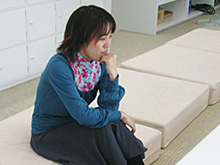
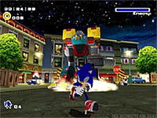
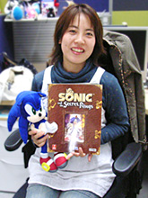

西村さんは、セガスタジオUSAで『ソニックヒーローズ』を制作されましたよね。
アメリカ時代のお話も少し聞かせていただけますか？
開発のスタイル自体は、日本もアメリカも変わりません。ただ私の場合は同じチームとはいえ、それまで(『ソニックアドベンチャー2』では)海の向こうにいた人達と直接仕事ができるのがとても嬉しかったのを覚えています。自分の直接関わらないステージや新しいキャラクターのアイデアを皆で出し合ったり、細かい調整をしたり。
アメリカチームのメンバーはアットホームで、皆で美味しいレストランを開拓したり、映画を観に行ったりしました。でも皆さんベテランですし、仕事がとても速いので私はそのペースについていくのが大変でした。
家族で渡米されている人も多かったので、休日には家族ぐるみでホームパーティーをやることもありましたよ。「スタジオUSA通信」でのお馴染みの、サウンドクリエイター瀬上 純の家でもバーベキューパーティーをよくやっていました。青空の下で大きなお肉をほおばるのは、アメリカならではだな、と思います（笑）。
学生時代は、どのようなことに力を入れていましたか？
高校の頃から演劇をやっていまして、大学時代もそのメンバーと一緒にアマチュア劇団をやってました。役者もスタッフもどちらも楽しかったですが、皆で一つのものを作り上げる、という経験が今のゲーム作りに役立っているのかもしれません。
エレクトーンは大学時代まで続けていて、コンクールに出たり結婚式場でオルガンを弾くアルバイトなんかをやってました。 大学では音楽サークルでバンド作ったり、そこでもスタッフとしてPA（機材のセッティングや音のバランスを調整する音響スタッフ）をしたり、「学友会」という委員会の執行部に入って、大学側への要望や予算などについて議論しあったり、そのメンバーと海やキャンプに行ったり… 色々やってました。あまりに手を広げすぎて、最後の方は自分でもかなり混乱してましたけど(笑)。
色々と積極的に活動されていたんですね！
現在はどのようなお仕事をされているのですか？
ゆっくり、次はどうしようか考えている段階です。
次もWiiの作品に関わるかどうかは分かりませんが、今後の為にWiiリモコンを使った新しい、分かりやすい操作を考えたりしているところです。
次のお仕事も楽しみですね。
今までのお仕事の中で、一番印象に残っているものは何ですか？
全ての作品で毎回違う経験をさせていただいたのでどれも印象深いのですが、やはり、『ソニックアドベンチャー2』でしょうか。
初めてゲーム作りに関わって、ボス担当ということでビッグフットやバイオリザードといった印象的なボスを作ることができたのが良い思い出です。幸い、かなり自由に作らさせていただけましたし(笑)。
自分の作ったものは全部自分の子供のように可愛いです！あ、私、子供はいませんけど…(笑)。
ソニックシリーズの中で、一番好きなキャラクターは誰ですか？
その理由も教えて下さい。
ルージュですかねー。
ただの宝石泥棒かと思いきや大統領からの依頼も受ける、そんなミステリアスで小悪魔的なところが気になっちゃいます！
西村さんにとってソニックとは？
世界中を飛び回っている隣のお兄さん、でしょうか。気がつくと走り去っていて、ある時ふと戻ってきて見た事、体験したことを教えてくれるような。その体験をユーザーの皆さんに少しでも伝えられればいいなと思います。
前の項目で、作ってきたボスは自分の子供のようだと言いましたが、ソニックはまだまだそこまで行きません…。でも、ソニックは開発者、ユーザーの皆さん一人一人に思い入れのあるキャラクターですから、多分「これがソニック」と型にはまることはなく、いつまでも走り続ける存在でいて欲しいです。
最後に、「ソニック チャンネル」をご覧になっているみなさんに
一言お願いできますでしょうか？
『ソニックと秘密のリング』は今までのソニックファンの方、あまりゲームをやった事がない方どちらもが楽しめる作品だと思います
アクションが苦手でいつもは見てるだけ、というお母さんや小さな兄弟も巻き込んでパーティーモードで一緒に盛り上がったり、自分のお気に入りのスキルカスタマイズを見つけたりして楽しんで欲しいです！